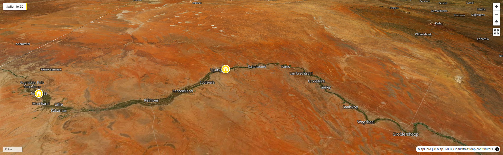

BackpackersBible.com
Northern Cape Province

No photograph exists that can prepare you for this place. There are photographs, plenty of them — red dunes at sunrise, a carpet of orange daisies stretching to the horizon, a lone quiver tree standing against a sky so dark with stars it looks edited. They are all technically accurate and they are all completely useless as preparation. You have to come here to understand it.
The Northern Cape is the largest province in South Africa and the most sparsely populated. At 373,000 square kilometres, it is roughly the size of Germany, and it contains fewer people than a mid-sized European city. That ratio — of space to human presence — is something you will feel in your body before you consciously register it. The silence has a texture here. The sky is not a backdrop; it is the dominant feature of the landscape in every direction. And the light, especially in the late afternoon when the Kalahari dunes turn the colour of a charcoal drawing, is unlike anything you will have seen in your life.
This is not the South Africa of tourist brochures. There are no wine farms, no beach cafés, no Instagram queues at the waterfall. The Northern Cape is the South Africa that exists when you drive far enough in any direction that the last familiar thing disappears behind you, and the road ahead runs uninterrupted to the horizon and beyond. You will find yourself in a town of 200 people, eight hours from the nearest city, with nothing between you and the Botswana border except red dunes and a warthog using the road at the same time you are. That is the Northern Cape doing its job. And its job, if you are the right kind of traveller, is to reorder your understanding of what a landscape can be.
The Northern Cape is not one landscape; it is four, stacked against each other with an abruptness that the distances conceal until you are already inside the next one. In the northwest, Namaqualand runs along the Atlantic coast — a semi-desert of low mountains and quartz plains that spends most of the year looking brown and inhospitable and then, after the winter rains, explodes into the largest wildflower display on earth. In the northeast, the Kalahari — soft red sand dunes, ancient riverbeds, camel thorn trees, and an ecosystem of extraordinary resilience that supports lions, cheetahs, meerkats, gemsbok, and hundreds of species of birds. In the south and centre, the Great Karoo: flat, vast, fossilised, home to some of the most ancient rocks on the surface of the earth and, directly above them, some of the darkest skies in the southern hemisphere. And in the far northwest, the Richtersveld: a mountain desert of crumbling quartzite and dolerite where the temperatures regularly exceed 50°C, the fog rolls in off the Atlantic before dawn to water the succulents, and the landscape looks, without exaggeration, like the surface of another planet. Between these four regions runs the Orange River — South Africa's longest river and the only permanent source of water across the entire province — cutting a ribbon of green through the arid interior that has sustained human life here for hundreds of thousands of years.
It is, in short, a place of extremes. The coldest nights in South Africa happen here — Sutherland, a small Karoo town of a few hundred people, regularly records sub-zero temperatures in winter. The hottest days in South Africa happen here too — summer in the Kalahari and the Richtersveld can reach 53°C in the shade. The driest parts of the province receive less than 50mm of rain per year. And yet life — human, animal, botanical — is everywhere, adapted in ways that will stop you mid-step and make you crouch down to look more closely at something growing out of bare rock. This is the place that puts the word "wilderness" back in front of your face with its original meaning intact.
Before you go anywhere in the Northern Cape, you need to understand something about who was here first. Not as background information. Not as the preamble to a museum visit. As the central fact of the landscape itself, because the San — the indigenous hunter-gatherers of southern Africa — and this land are not separable things. The Northern Cape is, more than anywhere else on the continent, their place. And the story of what happened to them is one of the most important things you will encounter anywhere in South Africa.
The San are, by all available genetic and archaeological evidence, the oldest continuously surviving culture on earth. Their ancestors diverged from other humans as far back as 100,000 to 200,000 years ago. They have lived in southern Africa, and specifically in the territory now called the Northern Cape, for longer than agriculture exists, longer than writing exists, longer than any civilisation anywhere on earth. When the first Europeans arrived at the Cape in the 17th century, the San had already been here for tens of thousands of years. They had painted and engraved almost every significant rock outcrop across the region. They had named every plant, every animal track, every shift in the weather. They had developed a cosmology of extraordinary sophistication — a system of belief in which the shaman entered a trance state through rhythmic dance and accessed the spirit world, a journey they recorded in rock paintings that are not just art but a visual record of consciousness itself. When you stand in front of San rock art — whether at Wildebeest Kuil outside Kimberley, where more than 400 engravings are spread across a low sacred hill, or at any of hundreds of other sites across the province — you are standing in front of images made by people who understood this landscape with an intimacy no subsequent culture has come close to matching.
What followed European colonisation was, and there is no polite way to put this, a systematic attempt at extermination. The San were declared vermin by the Dutch and later British colonial authorities. Hunting parties were organised. Farms were granted on land the San had lived on for millennia. Their children were taken into servitude. Their languages — click-language families of staggering complexity, unlike anything else in the human linguistic record — were forbidden. By the time apartheid arrived in 1948, the damage was mostly done: the ǀXam, once the dominant San group of the Northern Cape's Karoo, had been reduced to a handful of speakers and would be entirely extinct as a spoken language by the mid-20th century. The language vanished. But its words survived. South Africa's national motto — !ke eː ǀxarra ǁke, meaning "unity in diversity" — is written in ǀXam, the language of people who were hunted from this very land. That fact, sitting on the country's coat of arms, is not incidental. It is an attempt, imperfect and politically complicated, at reckoning.
Today, the primary community of San people in the Northern Cape is the Khomani San, who live in and around the southern Kalahari — a vast stretch of red dunes that straddles the border with Botswana and Namibia. Their territory was formally recognised in 1999 when, after decades of dispossession, the Khomani San won a landmark land claim that returned 28,000 hectares within what is now the Kgalagadi Transfrontier Park to their ownership. In 2017, the ‡Khomani Cultural Landscape was inscribed as a UNESCO World Heritage Site. The Khomani San, who call themselves Bushmen, are a small community — a few hundred people — living in extraordinarily difficult circumstances: economically marginalised, geographically remote, and in the ongoing process of trying to preserve a culture and a language (Nǀuu, now spoken by fewer than 30 people) that the colonial period nearly destroyed. They are not a tourist attraction in the conventional sense. They are a living people navigating an extraordinarily complex present. That distinction matters enormously in how you engage with them.
The way to engage with them properly is through community-led tourism. The most significant example is !Xaus Lodge, a community-owned property situated inside the Kgalagadi Transfrontier Park, jointly owned and run by the Khomani San and Mier communities. Staying here — and booking guided tracking experiences with San guides, walking the dunes with people who can read the sand the way you read a printed page — is the most direct and most ethically sound way of meeting the Khomani San on their own terms and contributing economically to their community rather than to an outside operator. The tracking experiences are not performances. They are genuine demonstrations of a knowledge system — of how to read animal prints, identify medicinal plants, navigate by star and wind, and move through a landscape with a fluency that no Western education has ever replicated. It is, without overstating it, one of the most quietly life-changing things you can do in South Africa. Alternatively, at the park's Twee Rivieren rest camp, the newly launched Khomani Interpretive Centre provides an excellent introduction to the community's history and culture for those not staying at !Xaus Lodge.
Near Kimberley, the Wildebeest Kuil Rock Art Centre — managed by the !Xun and Khwe San communities who own the land — is a guided site where more than 400 rock engravings, made between 1,000 and 10,000 years ago, are set into a low sacred hill. The guides are from the San community. The walk takes about an hour and the commentary, if you listen carefully, is not just about the images — it is about a way of seeing the world that the images encoded and that the guide is one of the few remaining people in a position to explain. Go slowly. Ask questions. The entry fee is small and goes directly to the community.
In 1866, a 15-year-old Afrikaner boy named Erasmus Jacobs picked up a shiny pebble on his family's farm near Hopetown on the Orange River. He thought it was pretty. He used it as a toy. His father eventually sold it to a neighbour, and when it reached the right hands in Cape Town and then London, it was confirmed to be a 21.25-carat diamond — the first diamond ever identified in South Africa. They named it Eureka.
A few years later, an 83.5-carat diamond was found nearby. That was enough. The rush began. Within months, tens of thousands of prospectors from across South Africa, Britain, Australia, and further afield had flooded into the barren Karoo scrubland 475 kilometres from Cape Town, clambering over a flat-topped hill called Colesberg Kopje with picks and shovels and a collective desire so urgent it feels in retrospect almost geological. They dug. They kept digging. The hill became a crater. The crater became a hole. By the time the mine officially closed in 1914, up to 50,000 people had worked this site simultaneously, extracting 22 million tons of rock and yielding 2,720 kilograms of diamonds in the process. The hole they left behind measures 463 metres wide and drops 240 metres into the earth. It is, by most measures, the largest hole ever dug by human hands.
The town that grew up around it — first called New Rush, renamed Kimberley in 1873 after the British Colonial Secretary who apparently found "New Rush" insufficiently dignified — became one of the most extraordinary boom towns in history. Cecil John Rhodes arrived in 1870, aged 17, and sold ice cream to miners in the heat before beginning to buy up mining claims. Barney Barnato walked three months from Cape Town because he couldn't afford the coach. The rivalry between them was the engine of what became De Beers — still the largest diamond company in the world. Kimberley was, for a few years in the 1870s and 1880s, the second-largest city in southern Africa. It had the first electric street lighting on the African continent. It had a stock exchange before Johannesburg did.
What the promotional material about the Big Hole museum tends not to emphasise, and what the introductory film glosses over, is who actually dug it. The vast majority of the labour was Black African workers — migrants from across the region, working in conditions of extraordinary harshness, housed in enclosed compounds that presaged the apartheid migrant labour system, searched routinely for stolen diamonds in ways that were degrading and often violent, and paid wages that bore no relationship to the wealth being extracted. The diamond rush did not only produce De Beers. It produced the template for the racialised labour system that would govern South Africa for the next century. The Big Hole is genuinely worth visiting — the scale of it, glimpsed from the viewing platform above its green-flooded floor, is one of the genuinely vertiginous moments available to a traveller in South Africa. But the full picture of what it cost to dig it is part of what you're looking at.
The Namaqualand flower season happens every year between August and October, when winter rains trigger a mass germination of dormant seeds across the semi-desert plains. What blooms is not a scattering of wildflowers. It is a total transformation of the landscape — an unbroken carpet of Namaqualand daisies (orange, white, yellow), vygies (neon-pink and purple succulents), and more than 4,000 other species covering rolling hills and quartz-strewn flats from one horizon to the other. The flowers face the sun and close at night, which means the best time to see them is mid-morning on a clear day. Kamieskroon and the Skilpad Wild Flower Reserve nearby are the epicentres. The photographs you will take here will not be believed. People will think you've edited them. You have not edited them. The Northern Cape simply does this.
The Kgalagadi Transfrontier Park — a vast wilderness area spanning the border between South Africa and Botswana — is one of the most spectacular game reserves on the continent and one of the most underrated by foreign backpackers, partly because it requires a car and partly because it lacks the name recognition of Kruger. This is an error. The Kalahari lion — bigger, darker-maned, and adapted to desert conditions — is in the Kgalagadi. So are cheetah, leopard, gemsbok in herds of dozens, black-maned lions draped over red dunes at dawn, and a birdlife of extraordinary richness. The reserve is not as manicured as Kruger; the roads are rougher, the camps more basic, the distances greater. These are not disadvantages. They are the point.
The Richtersveld — a UNESCO World Heritage Site in the far northwest corner of the province — is where the landscape tips over from dramatic into something beyond that. This is the driest, most mountainous desert in southern Africa, a place of crumbling quartzite peaks and ancient volcanic rock where the plant diversity is the highest of any desert on earth: 30% of all South Africa's succulent species grow here, many of them found nowhere else in the world. The halfmens — literally "half human" in Afrikaans — is a tall, peculiar succulent that grows with most of its mass towards the north, as if straining towards something just out of reach. The kokerboom, or quiver tree (its hollow branches were used by the San as quivers for their arrows), grows to ten metres and glows silver-gold at sunrise. Walking through a forest of them in the early morning, when the light is still oblique, is an experience that requires no embellishment. And at the park's Sendelingsdrift gate on the Orange River, a hand-cranked pontoon — one of the last functioning river ferries in southern Africa — crosses the border into Namibia, making the Richtersveld a natural transit point for travellers heading north. If you are going to or from Namibia and you are willing to deviate from the main N7/Vioolsdrif route, this is the deviation to make.
And then there are the stars. Sutherland, a small Karoo town of roughly 3,000 people sitting at 1,500 metres on the edge of the Roggeveld plateau, is the home of SALT — the Southern African Large Telescope, the largest single optical telescope in the southern hemisphere, with a hexagonal mirror array 11 metres across. It is here because the skies above the Karoo are among the clearest and darkest in the world: no light pollution within hundreds of kilometres, 300+ clear nights per year, and an atmosphere dry enough to make the stars look hard-edged and impossibly close. SALT runs public night tours. But you don't need SALT to experience the sky. You need to be outside, away from any artificial light, somewhere between Sutherland and Upington or anywhere in the Kalahari, and to look up. The Milky Way is not a faint smear here. It is a physical thing, a band of light dense enough to cast shadows, arcing from one horizon to the other. If you have never seen the southern sky from a genuinely dark site, do not leave the Northern Cape without doing this. It will recalibrate something in you that stays recalibrated.
Honestly: yes, almost certainly. The Northern Cape's defining characteristic as a travel destination is also its defining logistical challenge — the distances are enormous and the public transport infrastructure is minimal. Kimberley has a small airport with connections to Cape Town and Johannesburg. Upington has another. But between Kimberley and Upington is 400 kilometres of Karoo scrubland, and between Upington and the Kgalagadi park gate is another 270 kilometres, and none of it is served by anything you'd recognise as a bus network.
The practical options for backpackers without cars are: join an organised tour (several operators out of Cape Town and Johannesburg run small-group Kalahari and Namaqualand tours at backpacker-friendly prices, and these are worth considering seriously — the cost of a hire car plus fuel across these distances can easily exceed what a tour charges); hitchhike (realistic on the main routes between larger towns, particularly the N14 between Upington and Johannesburg, but slow and requiring patience); or focus your trip around the two or three towns that have enough within walking or taxi distance to be independently accessible — primarily Kimberley, which has the Big Hole, Wildebeest Kuil, and several days' worth of content within reach, and Upington, which has the Orange River and access to the Kgalagadi if you can arrange a ride from the rest camp side.
If you do hire a car, a standard 2WD sedan is fine for most of the major routes and all the tarred roads. The Richtersveld and several Kalahari tracks require a 4x4 with high clearance — do not attempt these routes without one, regardless of what Google Maps suggests. Hire cars in Kimberley and Upington are cheaper than Cape Town. The golden rule for Northern Cape driving: always fill up when you see a petrol station, because the next one may be 200 kilometres away. Carry water. Tell someone where you're going.
It depends entirely on what you're going for. The Namaqualand wildflower season runs from roughly late July to early October, peaking in August and September. This is unambiguously the best time to visit Namaqualand and the Springbok area, but it is also the most popular and requires accommodation bookings well in advance. The flowers are unpredictable in their exact timing and location — they bloom where the rain fell in the preceding winter, which changes year to year. Check the local flower hotline (run by tourism authorities in Springbok) before committing to specific locations.
For the Kgalagadi and the Kalahari, winter (May–August) is the preferred game-viewing season: cooler temperatures make the animals more active during daylight hours, the vegetation is lower (making sightings easier), and the animals tend to congregate around waterholes. Summer in the Kalahari (November–February) can exceed 45°C, which is actively dangerous for anyone unprepared for it and genuinely uncomfortable even for those who are. The Kgalagadi is open year-round; if you must visit in summer, camp only at sites with shade structures and do your game drives exclusively at dawn and dusk.
Stargazing is best in the dry winter months (May–September) when cloud cover is minimal and the air is coldest and clearest. Sutherland in winter is seriously cold — sub-zero nights are common, and frost is not unusual. Pack accordingly. Summer in the Karoo is hot but the skies are often hazy; winter nights are cold but the Milky Way is spectacular in a way that makes the temperature irrelevant after the first five minutes.
The Richtersveld is brutal in summer and more manageable in winter — but even in winter, midday temperatures can be extreme. April–May and August–September are the optimal windows for the Richtersveld, combining tolerable heat with the possibility of occasional soft desert light.
By South African standards, the Northern Cape is exceptionally safe. The crime patterns that require vigilance in Cape Town, Johannesburg, and Durban — phone snatching, carjacking, opportunistic theft — are rare in the Northern Cape's smaller towns and essentially absent in the wilderness areas. Kimberley is the largest city in the province and the most urban, and requires the same common-sense awareness as any South African city: don't walk alone at night in unfamiliar areas, keep valuables out of sight in a parked car, and be aware of your surroundings. Upington and Springbok are smaller, quieter, and significantly more relaxed.
The genuine safety concerns in the Northern Cape are environmental, not criminal. Heat is the most serious: in summer, the Kalahari and the Richtersveld can kill an unprepared person with startling speed. Carry substantially more water than you think you need — the standard recommendation is five litres per person per day as a minimum in winter; more in summer. Tell your hostel or the park authorities where you are going and when you expect to return. Do not drive off-road routes without a 4x4 and recovery gear. The Richtersveld is habitat for puff adders and scorpions; do not walk barefoot at night and do not sleep on the bare ground.
The road distances are also a safety issue in a less dramatic sense: the Northern Cape generates a disproportionate share of South Africa's road accident statistics, primarily because the long, flat, identical-looking roads induce a kind of hypnosis in drivers who have been travelling for hours. Pull over and walk around if you feel drowsy. The roads are often better at night — cooler, less traffic — but night driving introduces the hazard of animals on the road, which is significant in the Kalahari and around the Richtersveld. Drive at a speed from which you can stop for a gemsbok in your headlights.
The word "Bushmen" — you will hear it used, and used without embarrassment, by many San people themselves, particularly the Khomani San who have specifically reclaimed it. The word "San" is the standard anthropological term, derived from a Khoikhoi word meaning "people different from ourselves," and is used officially across South Africa. Both are in use; neither is straightforwardly more respectful than the other in context. What is straightforwardly disrespectful is to refer to people as "primitive," to treat cultural demonstrations as amusement, to photograph San people without asking permission, or to approach the experience as a safari with humans as the attraction. The Khomani San are not a spectacle. They are a community of real people — with smartphones and complicated families and opinions about football, alongside the extraordinary repository of ancient knowledge they are fighting to preserve — and they deserve the same basic respect as any person you might meet anywhere.
The rock art — and there is an enormous amount of it across the Northern Cape, more rock engraving sites than almost anywhere else on earth — is not decoration. It is the record of religious and spiritual experience. The painted eland and the dancing figures in altered states are the visual residue of shamanic trance ceremonies in which the shaman's consciousness was understood to move between the physical and spirit worlds. When a San shaman painted an eland — the most sacred animal in the Khomani belief system — they were not painting what they saw. They were accessing something. Stand in front of it with that in mind, rather than with the eyes of a person looking at ancient graffiti, and the images become something different entirely.
Finally: if you are buying crafts directly from San community members, pay the asking price or negotiate gently and from a position of respect. The items — beadwork, woven goods, carved figures — represent knowledge and skill that has no equivalent anywhere. The prices are already, by any European standard, almost absurdly low.
Yes, and the Northern Cape is one of the more interesting ways to enter or exit Namibia. The main border crossing is at Vioolsdrif on the Orange River — a straightforward road bridge crossing on the N7, open around the clock, with full immigration and customs facilities. Vioolsdrif is 760 kilometres north of Cape Town, and the N7 between them is one of the great drives in southern Africa: through the Cederberg, across the Karoo plains, and into the Namaqualand mountains. If you're heading to Namibia from Cape Town, the Vioolsdrif crossing is the sensible choice.
The more adventurous option — and one that requires a 4x4 and some planning — is the pontoon crossing at Sendelingsdrift inside the Richtersveld park. This is a hand-cranked cable ferry that crosses the Orange River into Namibia at the park's western boundary. It operates weekdays from 8:00 AM to 4:00 PM; it does not operate in flood conditions or adverse weather; and you should phone ahead to confirm it's running before betting your route on it. If it is running, crossing here puts you on the Namibian side of the Ai-Ais/Richtersveld Transfrontier Park, with access to the Fish River Canyon — one of the world's great geological spectacles — and the Ai-Ais hot springs. Doing this as a through-route rather than a turnaround makes the Richtersveld not a detour from your Namibia journey but the actual beginning of it. That is worth considering.
There is also a smaller border post at Onseepkans, further upstream on the Orange River, which is usable but sees very little traffic and should be checked for current operational status before you rely on it. European passport holders do not require a visa for Namibia; the crossing is straightforward. Carry your full vehicle documentation, hire car letter of authority for cross-border travel, and enough cash or card for the Namibian side where rural infrastructure is even thinner than the Northern Cape.
The Northern Cape is, by any global standard, extraordinarily cheap — and significantly cheaper than the Western Cape, whose tourist infrastructure has allowed prices to inch upward. A dorm bed at a backpacker lodge in Kimberley or Upington runs R200–R300 per night (roughly €10–€15). A meal at a small town restaurant — a plate of Karoo lamb stew, bread, and a cold beer — costs R80–R120 (€4–€6). A braai pack from the local butcher (boerewors, a couple of chops, a pack of sosaties) costs less than €5 and will feed two people. Petrol is the significant cost in the Northern Cape, both because the distances are real and because there is no alternative to the car for most of what you'll want to do: budget for it properly.
Park entry fees are the other significant line item. The Kgalagadi charges a daily conservation fee of approximately R440 per adult (around €22 at current rates), on top of camp accommodation costs. SANParks offers a Wild Card — an annual park pass for foreign visitors that covers unlimited entry to all South African national parks and pays for itself in a few days of Kgalagadi or Augrabies Falls visits. If you are spending more than four or five days in SANParks territory across your South Africa trip, it is worth calculating whether the Wild Card makes sense for your itinerary. It usually does.
The one place Northern Cape prices approach European levels is in the private game reserve sector — Tswalu Kalahari, for example, is one of the most expensive lodges in Africa. These are not for backpackers and are not reviewed here. The national parks, community lodges, and municipal rest camps offer the same landscapes, the same wildlife, and frequently a more honest experience of the place for a fraction of the price.
Yes. The Namaqualand flower season is real, and it is one of the most surreal things that happens anywhere on earth with annual regularity. The Succulent Karoo biome — which covers Namaqualand and extends into southern Namibia — has been described by botanists as one of the most biodiverse ecosystems in the world relative to its rainfall, with over 5,000 plant species across a region that averages less than 150mm of rain per year. Almost all of those species lie dormant for most of the year, seeds buried in the dry soil. Then the winter rains arrive, and within weeks — sometimes days — the entire landscape germinates simultaneously.
The dominant visual effect is orange: millions of Namaqualand daisies (Dimorphotheca sinuata) carpeting the ground in every direction. But look closer and the variety becomes visible: pink and purple vygies, yellow Cape daisies, red poppies, white snow daisies, and dozens of species you will not know the names of but will photograph obsessively anyway. The best sites are around Kamieskroon, the Skilpad Wild Flower Reserve (book the Skilpad walking trail in advance), and the areas around Springbok and Garies. The flowers face the sun, which means mornings are spectacular and afternoons, when the light comes from behind, are significantly less so. And they close at night. Mid-morning on a clear, calm day in a peak flower year is the moment to be there. It is worth arranging your entire journey around it.
Wonderwerk Cave (near Kuruman): One of the most significant archaeological sites in the world and almost entirely unknown to foreign tourists. Evidence of human occupation at Wonderwerk spans more than a million years — making it one of the oldest continuously inhabited places ever discovered. Evidence of fire use here dates back one million years. Evidence of tool use goes back two million. This cave contains the physical record of the earliest chapter of human existence, and you can walk through it on a guided tour, with a knowledgeable guide who will tell you exactly what you're looking at. Entry is small. The experience is not.
Augrabies Falls (not hidden, but missed): Most backpackers coming to the Northern Cape know about the Kgalagadi but overlook Augrabies Falls National Park on the Orange River, 120 kilometres west of Upington. The main falls drop 56 metres into a 18-kilometre gorge of polished granite bedrock. When the Orange River is in flood — which happens unpredictably but spectacularly — the falls produce one of the loudest sounds you will ever hear from a waterfall. The gorge below has a quality of light in the late afternoon that turns the rock the colour of hammered copper. The park is small enough to drive in an hour but worth spending a night for the gorge at sunset and the klipspringer (a small antelope with astonishing rock-climbing ability) that pick their way along the cliffs above the water.
Riemvasmaak Community Conservancy: A hidden gem in the truest sense — a community conservancy north of Augrabies, jointly managed by a community that was forcibly removed from this land during apartheid and allowed to return in 1994. The landscape is extraordinary: granite canyons, geothermal hot springs, desert silence. The community runs guided 4x4 trails, hiking routes, and hot spring experiences. Staying here puts money directly into the hands of a community that lost everything to apartheid's forced removal programme and is rebuilding on its own land. The hot springs, in the middle of a canyon at sunset, are one of the Northern Cape's genuinely secret pleasures.
The Quiver Tree Forest at Nieuwoudtville: Halfway between the Northern Cape and the Western Cape, on the Bokkeveld Plateau, the small town of Nieuwoudtville sits beside one of the densest natural concentrations of quiver trees in existence — a forest of dozens of them spread across a hillside, each one silver-trunked and green-crested, looking simultaneously ancient and alien. In flower season, the surrounding plains are also among the best wildflower sites in the region. The town is tiny, unhurried, and entirely genuine.
Port Nolloth: A small fishing town on the Namaqualand coast, accessed via the N7 and a turn-off toward the Atlantic, Port Nolloth is the Northern Cape's most improbable seaside town: a scattering of corrugated-iron buildings on a beach where the cold Benguela Current comes directly from Antarctica and diamond divers in wetsuits work the seabed in front of you. It is strange, slightly surreal, and completely unlike anywhere else in South Africa. The sunsets over the Atlantic from Port Nolloth, with the cold sea sending spray across the rocks and the diamond diver boats pitching in the swell, are the Northern Cape's best-kept secret.
Be honest with yourself before you arrive: the Northern Cape is not Cape Town. There is no Long Street. There is no hostel strip where you stumble between parties and find community with fifty other backpackers from twelve countries. The Northern Cape is a province built for people who need very little in the way of social infrastructure and a great deal in the way of landscape. The accommodation scene reflects this.
Formal backpacker hostels, in the Long Street sense, are rare. What exists instead is a combination of small-town guest houses with dorm options, municipal rest camps inside the national parks (SANParks camps at the Kgalagadi, Augrabies, and the Richtersveld are the most significant), community-owned lodges like !Xaus in the Kgalagadi, Orange River camp sites at Vioolsdrif and Kakamas that draw an international overlanding crowd, and a scatter of well-priced small operators in Kimberley, Upington, and Springbok that cater specifically to budget travellers. The vibe at all of these is less "hostel party" and more "everyone on the stoep watching the light change over the dunes at sunset, talking to a retired couple from the Netherlands who've been driving Africa for three months." Which is its own kind of social experience, and in some respects a better one.
Kimberley has the most hostel-adjacent infrastructure: the city is big enough to have a few dedicated budget properties, a couple of reliable backpacker lodges near the Big Hole, and the McGregor Museum area offers some good-value guesthouses within walking distance of the main attractions. Upington is the next most practical base — it has airport connections, easy access to the Kgalagadi, and a number of Orange River camp sites and budget lodges that have been serving overlanders on the Cape Town–Namibia route for decades. Springbok, the last substantial town before the Namibia border on the N7, has limited but adequate budget accommodation and serves primarily as a one-night stop for travellers heading north or arriving from Namibia. Don't skip it in flower season.
Everything else on this list is optional. This is not. If you come to the Northern Cape and do not make any effort to learn from the San people who have lived in this landscape for tens of thousands of years, you will leave having seen a spectacular desert and missed the point of it entirely. The landscape is extraordinary on its own terms. With San knowledge as the guide to it, it becomes something else — a living system that someone can read aloud to you, page by page, and that you will never again look at as mere scenery.
The most accessible entry point is through the ‡Khomani San themselves, who run their tourism operations directly through their own community. The Khomani San CPA (Communal Property Association) coordinates bookings for guided walks and trails on their traditional farms of Witdraai and Erin, in the Kalahari dune belt south of the Kgalagadi park. Guided walks can be tailored to anything from an hour to a full day and cover tracking (reading animal spoor in the sand with a fluency that will seem, at first, like a kind of magic), identifying and explaining medicinal plants (the Kalahari's sparse vegetation is a pharmacy, if you know which drawer to open), and reading the landscape the way it was read for a hundred thousand years before GPS existed. The trackers and guides are certified to national standards and are from the community. This is their land. The knowledge is theirs. You are a guest. Contact the Khomani San CPA office: +27 (0)60 331 2473 or bookings@khomanisan.com
What it costs: Rates are set by the community and are extremely modest by any international standard. Contact directly for current pricing.
Free alternative: If you are driving the Red Dune Route between Upington and the Kgalagadi, the Khomani San maintain roadside stalls where community members sell handmade crafts — beadwork made from ostrich eggshell, carved figures, woven items — and are generally willing to talk. This is not a substitute for a guided walk, but it is a genuine point of contact, and buying directly from the maker at the roadside puts every rand in the right hands.
On the traditional farm Witdraai, about 60 kilometres south of the Kgalagadi park boundary and 180 kilometres from Upington, the Khomani San run a bush camp that is the most direct, most affordable, and most authentic San cultural experience available to a backpacker in South Africa. There is no gloss here. This is a working Kalahari farm, designed to feel as close as possible to a traditional San settlement: you camp under the stars or sleep in one of four traditional grass huts — thatch roofs, earth floors, the smell of the desert at night coming through the walls. There is a shared ablution block and a communal kitchen. If you want traditional food cooked for you — ash bread baked in the coals of a camelthorn wood fire, venison potjie, Kalahari lamb — you arrange it in advance and it happens around a fire under a sky that has no light pollution within 200 kilometres in any direction.
In the evenings, if you arrange it and the numbers allow, the community performs traditional San dances — the giraffe dance, the eland dance — each one associated with a specific animal and a specific ritual function, the women singing while the men stamp their feet in the sand with anklets of dried cocoons filled with small stones, driving the rhythm upward until the dance reaches something that is genuinely difficult to categorise. Storytelling by the elders, in the old tradition, is available on arrangement: these are stories that have been passed from parent to child for generations, and they contain a cosmology — an understanding of how the universe is structured and where humans fit within it — that has no equivalent in any Western philosophical tradition. You will not understand all of it. You will understand more than you expect to.
Contact: info@witdraaibushlodge.com or through the Khomani San CPA at khomanisan.com
What it costs: Camping and grass hut accommodation are budget-priced. Traditional meals, guided walks, and evening dances are charged as separate activity fees. Contact directly for current rates. This is one of the most affordable genuine cultural experiences in South Africa.
On Erin Farm near Andriesvale — another of the six farms returned to the Khomani San community in the land claim settlement — a community elder who goes by Aunt Koera runs an open-air farm kitchen that is, by any measurement, one of the most interesting restaurants in South Africa. The food is cooked over fire or in a three-legged cast iron pot in the traditional manner: ash bread baked directly in the coals of a camelthorn fire, venison potjie with vegetables, Kalahari lamb chops with braai bread. There is no building to speak of. You are sitting outside on a working Kalahari farm, eating food that has been cooked by the method that sustained a people in this landscape for a hundred thousand years, while the light goes slowly amber and the dunes turn red behind you.
This is not a tourist restaurant. It is a community member cooking her food for visitors who have had the sense to come to her. Book in advance. Arrive with nothing planned for the rest of the evening. Contact Aunt Koera: +27 (0)83 588 8346
Erin Farm also offers guided heritage walks, birding, and — for those who want it — the opportunity to go bow hunting with experienced Khomani San trackers. The bow hunting is not trophy hunting; it is a demonstration of a skill and a relationship with prey animals that has no equivalent in any Western hunting tradition. You are not required to shoot anything. You are invited to understand the knowledge that makes the shot possible.
Sixteen kilometres from Kimberley on the R31, on land owned by the !Xun and Khwe San communities, a low sacred hill carries more than 400 rock engravings made by San people over the last 10,000 years. The animals are immediately recognisable: eland, elephant, rhino, hippo — species that were here long before the land was mined or farmed, and that the San tracked and revered and encoded into stone with a precision that still stops archaeologists mid-sentence. The technique is different from the painted rock art of the Drakensberg — these are engravings, chipped into the rock's outer crust to expose the lighter stone beneath, and with time the exposed portions have patinated back to near-darkness, making some images almost invisible until the guide points to them and they leap out of the surface. The experience of suddenly seeing something that has been there for millennia, invisible until someone who knows it shows it to you, is what a guided site visit does and what no photograph can replicate.
The visit begins in the visitor centre with a 20-minute film about the !Xun and Khwe communities — their history is itself remarkable: both groups were drawn into the South African Defence Force's border war in Namibia in the 1970s, airlifted to a tent camp near Kimberley in 1990 when Namibia gained independence, and spent 15 years in that tent camp before finally being resettled on this land. The rock art predates all of that by thousands of years. The guide who walks you through it is from the community that owns the hill. These are two things it is worth holding simultaneously.
What it costs: Very reasonably priced (around R50 per adult). A portion of every entry fee goes directly to the !Xun and Khwe community. Tours run Monday to Friday 09:00–15:00; arrange weekend visits in advance through the McGregor Museum in Kimberley (+27 53 839 2700). Allow 1.5–2 hours.
Free activity nearby: The McGregor Museum in Kimberley itself is one of the most comprehensive and intellectually serious museums in South Africa, covering the region's San heritage, Anglo-Boer War history, natural history, and more, in a building that was Cecil Rhodes's private residence during the Siege of Kimberley. Entry is very low-cost and worth half a day on its own.
Standing on the viewing platform above the Big Hole, looking down into its flooded green floor 215 metres below you, is one of those moments that recalibrates the scale of what human beings are capable of when sufficiently motivated. This is the largest hole ever dug by hand. From mid-July 1871 to 1914, up to 50,000 people worked simultaneously in this pit, extracting 22 million tonnes of rock with picks and shovels. They pulled 2,720 kilograms of diamonds out of it in the process. The rim of the hole is 463 metres wide. You can see the whole thing from a single position on the viewing platform, and the sense of depth — of a hole that has no business being this large, this deep, in the middle of a Karoo scrubland town — is genuine and visceral.
The Kimberley Mine Museum surrounds the hole: an open-air reconstruction of colonial-era Kimberley with period buildings, Barney Barnato's boxing academy, the old pub, and De Beers' railway coach (Cecil Rhodes commuted between Cape Town and Kimberley in it). An underground mine recreation takes you into a shaft of the period. The introductory film tells the diamond rush story compellingly, though with the selectivity you'd expect from a museum funded by De Beers — the labour conditions, the proto-apartheid compound system, the disproportionate share of the work done by Black miners for a fraction of the profit, are there between the lines if you look for them. The surrounding town of Kimberley has its own density of history: the Siege of Kimberley (1899–1900), when Boer forces besieged the city for 124 days; Sol Plaatje's house museum (Plaatje was a founding ANC member, one of the great South African writers, and lived here during the siege); and the William Humphreys Art Gallery, which holds one of the best collections of contemporary South African art outside Cape Town.
What it costs: The Big Hole Museum charges an entry fee (approximately R220 per adult as of early 2026; check thebighole.com for current rates). The surrounding area of Kimberley — the town hall, the memorials, the historic Belgravia suburb — is free to explore on foot.
Free activity: The Oppenheimer Gardens and the exterior of the historic Kimberley Club (where Rhodes and Barnato played cards) cost nothing and give you the architecture of the diamond rush boom years without the museum entry fee.
Forty-three kilometres south of Kuruman on the R31, set into the base of a dolomite hill in the Kuruman Hills, is the most undervisited significant archaeological site in Africa. Wonderwerk Cave extends 140 metres horizontally into the hillside. The deposits inside it — layers of accumulated sediment up to seven metres deep — contain a continuous record of human and pre-human occupation going back nearly two million years. Evidence of fire use here has been dated to one million years ago: the oldest controlled fire ever discovered anywhere on earth. Evidence of tool use goes back further still.
The San painted and engraved rock art on the walls near the entrance. Deeper in the cave, where the light thins to near-nothing and the temperature drops suddenly, archaeologists are still excavating in a research programme that generates new discoveries regularly. A guided tour takes you through the cave's full length, and a knowledgeable guide — book through the McGregor Museum in Kimberley — will explain what you are actually looking at: which layer of sediment corresponds to which period, which tool belongs to which culture, what the ash layer represents. It is one of those experiences where the information changes the thing you are seeing in real time, layer by layer, until you are standing in an ordinary-looking cave in the Karoo and feeling the full weight of two million years of human history pressing gently but unmistakably against your chest.
What it costs: Approximately R40 per adult. Book with the McGregor Museum: +27 (0)53 839 2700. Tours run Monday–Friday 09:00–15:00; weekend visits must be arranged in advance. Bring cash; there is no ATM nearby. Bring water, sturdy shoes, and a layer — it is cool inside the cave and scorching outside it.
The Kgalagadi is one of the greatest wildlife areas on earth, and it is one of the most underrated by foreign backpackers — partly because it lacks the name recognition of Kruger, and partly because it requires planning and a car. Both objections are worth overcoming. The Kgalagadi covers 38,000 square kilometres of Kalahari desert straddling the border between South Africa and Botswana: a landscape of ancient red sand dunes, dry riverbeds thick with camel thorn trees, and a sky so large it constitutes a landscape feature in its own right. The wildlife is adapted to this arid ecosystem in ways that make it entirely different from the savannah parks: the Kalahari lion — bigger-bodied and darker-maned than his Kruger equivalent, evolved for a harder environment — is the signature sighting, along with cheetah, leopard, spotted and brown hyena, gemsbok in herds of dozens, and a raptor diversity that will convert anyone who has ever casually enjoyed birdwatching into someone with a field guide and a dedicated camera.
The principal activity is self-drive: you get in your car at camp gate opening time (around sunrise), you drive the two main routes along the dry Auob and Nossob riverbeds, and you see what is there. What is there is often spectacular. The park's three main rest camps — Twee Rivieren (the largest, near the South Africa entry gate), Nossob (in the north, three hours' drive from Twee Rivieren), and Mata Mata (on the western Namibia boundary) — have SANParks camping sites and chalets, small camp shops, fuel, and swimming pools. Camping is the most affordable option and puts you properly inside the landscape: the sounds of the Kalahari at night — the distant call of a spotted hyena, the sudden alarm call of a gemsbok, the dry wind in the camel thorns — are part of what you are paying for.
A standard 2WD is fine for the main gravel roads. The dune loop roads between the riverbeds require a 4WD. Book SANParks accommodation well in advance — particularly the wilderness camps, which have no fences and take only a handful of guests, and which can be fully booked more than a year ahead for peak winter months. Walk-in cancellations do happen; it is worth calling SANParks on the day if you are flexible.
What it costs: Daily conservation fees are approximately R440 per adult (around €22). Camping starts from R270 per site per night. The SANParks Wild Card — an annual unlimited-entry pass to all South African national parks, available to international visitors — costs approximately R1,800 for individuals and pays for itself after four days in a park with this conservation fee level. Worth calculating for your specific itinerary.
Free activity inside the park: The waterholes at each camp are freely accessible to anyone staying at that camp, 24 hours a day. The Nossob camp waterhole has a hide with a spotlight that illuminates it after dark: sitting there in the still of a Kalahari night, watching whatever decides to come and drink, costs nothing beyond your accommodation fee and is one of the most reliably extraordinary wildlife experiences in the park.
Within the park — the !Xaus Lodge experience: For backpackers who want to combine the Kgalagadi with the deepest possible San cultural encounter, !Xaus Lodge is the answer. Situated on a red dune inside the park's private concession area — 50,000 hectares of land returned to the Khomani San and Mier communities in 2002 — it is owned by those communities and staffed almost entirely by community members. The guides grew up here. The tracks in the sand they show you on the morning dune walk are tracks in sand their grandparents read. !Xaus is not cheap by backpacker standards (rates include all meals, game drives, and the dune walks, and fall into the budget end of the game lodge market rather than the hostel market), but it is, without question, the most significant single experience available to a visitor in the Northern Cape: the convergence of outstanding wildlife, extraordinary landscape, and the living culture of Africa's oldest people in the only place they can properly be encountered. Contact !Xaus Lodge directly: xauslodge.co.za
The name comes from the Khoikhoi word aukoerebis — "place of great noise." It is an accurate name. The Orange River, South Africa's longest, gathers itself across the entire breadth of southern Africa and then drops 56 metres into an 18-kilometre gorge of polished black granite bedrock. When the river is in flood — which happens without warning and dramatically — the noise of the falls is audible kilometres away and the force of the water turns the air permanently wet for hundreds of metres around it. The gorge below the falls is itself extraordinary: 240 metres deep in places, the walls worn to a smoothness by millions of years of abrasion, the rock the colour of dark copper in the late afternoon light. Klipspringer — small, improbably athletic antelope — pick their way along the vertical cliff faces with a confidence that makes your hands sweat just watching.
The Augrabies Falls National Park is small enough to be covered in a day but worth staying overnight for the gorge at sunset and the relative quiet of very early morning, when the light hits the water at a low angle and the mist from the falls catches it. The Dassie Nature Trail (self-guided, free with park entry) follows the gorge rim for several kilometres and gives you a series of viewpoints that vary dramatically in character — looking directly down into the gorge from one, looking upstream along the river from another, looking at the full width of the falls from a third. The rock hyrax (dassie) — a small, round, furry mammal that looks like it has no business being related to the elephant, but is — will investigate you closely at every stopping point. A two-kilometre morning walk to Arrow Point viewpoint is the best single thing to do in the park, and it costs nothing beyond entry.
What it costs: Park entry approximately R220 per adult (check SANParks for current rates). Camping from R270 per site. The SANParks Wild Card applies here.
Free activity: The falls themselves are visible from multiple viewpoints on walking trails included in the park entry fee. There is no additional charge for the gorge walk or the night illumination of the falls (which runs until 22:00).
The most popular section for rafting the Orange River is the Richtersveld stretch — starting at Vioolsdrif on the Namibia border and working downstream through the desert gorges of the ǀAi-ǀAis/Richtersveld Transfrontier Park. The format is the same across most operators: a two-person inflatable canoe or raft, a guide in a support boat, six hours of paddling per day (broken up with a long midday stop for swimming, eating, and horizontal time on a warm rock), and camp on a river beach each night. The river moves at varying speeds — some sections are long, flat pools where the reflection of the Richtersveld canyon walls is so perfect the water appears to be made of stone; others are short, enthusiastic rapids where at least one person in the boat is going to get wet. No experience is necessary. Children and older travellers do this regularly.
What makes the experience is the nights. You are camping on isolated beaches with no access by road, no electricity, no phone signal, and no light beyond the fire and the stars. The Richtersveld sky at night, seen from a river beach deep inside the canyon with the water whispering past you and the walls of the gorge rising on both sides, is one of those experiences that people describe inadequately to people at home and then recommend with a specificity and urgency that puzzles their friends until those friends go and understand immediately. The food — cooked by the guides on a fire, invariably good, improbably abundant — and the company of whoever else is in the group with you make the three or four days self-contained in a way that longer trips rarely manage.
The river runs year-round, but April to October is the optimal window: warm days, cool nights, manageable water levels. Summer on the Orange River can reach 45°C; it is still runnable but requires serious heat preparation. The three-night/four-day trip is the standard and the most recommended; two-day trips are available for those with less time. All meals and camping equipment are provided by the operator.
Operators: Several well-established companies run this section, all based at camps on the river. Orange River Rafters (orangeriverrafters.co.za) operate from Vioolsdrif. Felix Unite (felixunite.com) have base camps at both Vioolsdrif and Noordoewer on the Namibian side. Umkulu Safari & Canoe Trails (orangeriverrafting.com) have operated this section for over 20 years. For a shorter taster, half-day rafting trips are bookable from the camp at Vioolsdrif.
What it costs: A fully catered 4-day trip runs approximately R3,500–R4,500 per person (€175–€225) depending on the operator and season — this includes all meals, camping equipment, and guiding. It is one of the better-value multi-day adventure experiences in southern Africa at current exchange rates.
The Namaqualand wildflower season (roughly August–October, peaking in mid-August to mid-September depending on rainfall) is something you need to be on foot inside to properly understand. The photographs — even the good ones — present it as a panoramic spectacle, and it is that. But it is also, at ground level, a botanical universe: hundreds of species growing side by side in combinations that no gardener has designed and no computer could generate, each one adapted to a different microclimate of soil chemistry, sun angle, and drainage. Get out of the car and walk into it.
The Skilpad Wild Flower Reserve near Kamieskroon is the most reliable and most intensively managed wildflower site in Namaqualand. The Skilpad Walking Trail — 4.5 kilometres, marked with tortoise emblems, with panoramic views of the Kamiesberg peaks — takes about two hours and passes through the densest concentrations of flowers in the reserve. Book ahead at the Skilpad office and sign in before you start; bring water and sun protection. The reserve charges a small entry fee. The walk is free with entry.
Free wildflower activity: You do not need to be inside a reserve to see the flowers. The N7 between Garies and Springbok during peak season passes through open flower fields that are freely accessible from the road. Pull over anywhere that looks good, walk into the veld, and crouch down. At ground level — eye to eye with a Namaqualand daisy, with the smell of warm, wet earth and the sound of insects doing the rounds — the scale tips from panoramic spectacle to intimate miracle. Both experiences are available. Both are free.
Flower season information: Flower conditions vary year to year depending on winter rainfall distribution. The Northern Cape Tourism Authority runs a wildflower hotline during the season (August–October) at +27 (0)27 712 8035 that provides daily updates on which areas are peaking. Check before committing to a specific location; the best flowers are not always where they were last year.
Sutherland is a small Karoo town of around 3,000 people on the edge of the Roggeveld plateau, 370 kilometres north of Cape Town. Its elevation (1,450 metres above sea level), its distance from any significant light pollution, and the exceptionally dry, stable air above it make it one of the premier astronomical observation sites in the world. This is why the South African Astronomical Observatory (SAAO) built its flagship instrument here: SALT, the Southern African Large Telescope, whose hexagonal mirror array stretches 11 metres across and is the largest single optical telescope in the southern hemisphere.
The SAAO offers guided day tours of the site — you see SALT up close, learn how it operates, and have the context of the facility properly explained by staff who know it. Night tours, run from the Sutherland campsite and various guest houses in town, give you access to smaller research telescopes (a 16-inch Meade and 14-inch Celestron are typically used for public viewing) as well as the guiding knowledge to navigate what you're looking at. The Milky Way, seen from Sutherland on a clear winter night through a large telescope, shifts from a beautiful abstract band of light to a catalogue of specific objects — the Omega Centauri globular cluster (10 million stars in a sphere 17,000 light years away), the Jewel Box open cluster (a tight knot of blue and orange stars), the Southern Cross with its stellar neighbours exactly as the San navigated by them for millennia — and the accumulation of these specific things is what makes stargazing at a genuinely dark site qualitatively different from looking up anywhere else.
Free stargazing: You do not need to book a telescope session to see the sky from Sutherland. Walk ten minutes from the town on any clear night and face away from the handful of streetlights. The Milky Way is visible as a physical band of light even from inside the town. Outside it, with the Roggeveld plateau in every direction, the sky is dark enough that you can read by the Milky Way's light — not easily, but you can. This is genuinely free. It is also genuinely unlike anything you will have seen before if you have spent your life in Europe.
San stargazing: At !Xaus Lodge in the Kgalagadi, where the night sky is equally extraordinary, the Khomani San guides offer a different kind of sky tour — the stars as they are understood in San cosmology, which is not a system of constellations in the Western astronomical sense but a layered spiritual geography in which the night sky is a map of the spirit world. The Milky Way, in Khomani San tradition, was made when a girl from an ancient time threw the cinders of a fire into the sky to light the path home for hunters. That story is not mythology in the dismissive Western sense. It is a way of encoding important information about navigation, about the relationship between humans and the dark, and about the obligation of community to those who are out in the night. Hearing it told under the actual sky it describes, by someone whose grandparents were told it by their grandparents, is worth understanding as its own form of knowledge.
What it costs: SAAO day tours are free. Night tours run by local operators in Sutherland cost approximately R300–R500 per person depending on the operator and scope access. Contact through your Sutherland accommodation. The drive from Cape Town to Sutherland is approximately 3.5 hours via the N1 and R356.
The Richtersveld is not for everyone, and it makes no apology for that. It is remote (Springbok, the nearest substantial town, is more than 300 kilometres away by road), it is difficult to reach without a 4WD vehicle, and in summer it is actively hostile to human life in ways that require careful management. In exchange for all of that, it offers the most visually alien and botanically extraordinary landscape in South Africa, and a quality of silence and remoteness that is becoming genuinely rare anywhere on earth.
The ǀAi-ǀAis/Richtersveld Transfrontier Park — formed by treaty between South Africa and Namibia in 2003 — covers this mountain desert and extends across the Orange River into Namibia. On the South African side, entry is via Sendelingsdrift gate on the western boundary (accessible with a 4WD from Port Nolloth and Alexander Bay). The park's road network is largely unpaved and requires high clearance; some sections require 4WD in low range. This is not a place to bluff your way through in a sedan. Inside it, the reward is a landscape that changes character every few kilometres: quartzite peaks that glow red-orange at dawn, plains of black volcanic rock with succulents growing out of what appears to be bare stone, the Orange River appearing suddenly below a ridge in a strip of impossible green between brown canyon walls.
The halfmens — the "half human" succulent that grows with its crown angled always toward the north — is one of the strangest plants you will see anywhere. The kokerboom forests glow silver in the early morning. The plant diversity is the highest of any desert in the world: 30% of all South Africa's succulent plant species grow here, many occurring nowhere else. Come with a botanical guide book or download the iNaturalist app and use the camera identification tool: you will be identifying something new every fifty metres.
Free activities in the Richtersveld: The park's designated viewpoints, picnic sites, and walking areas are included in the conservation fee. The De Hoop campsite on the Orange River, where the water widens and swimming is possible, is the social hub of the park — the evening around the fire at De Hoop, with the Namibian hills visible across the river and whatever has come to drink at the water's edge, costs nothing beyond the campsite fee.
What it costs: SANParks conservation fee applies (approximately R220 per adult per day). Camping from R270 per site. You must reach Sendelingsdrift gate before 16:00 to make it to a campsite before dark.
North of Augrabies Falls, in a granite canyon that most travellers drive past without knowing it exists, lies the Riemvasmaak Community Conservancy — 75,000 hectares of land managed by a community that was forcibly removed from it during apartheid and allowed to return in 1994. The landscape is extraordinary on its own terms: deep ravines, boulder-strewn plains, and two geothermal hot springs that well up out of the desert floor at a constant temperature of around 60°C (they cool to swimmable in their rock pools downstream). Soaking in a natural hot spring in the middle of a Northern Cape canyon at sunset, with no other tourists within sight, is one of those experiences that is difficult to explain to someone who has not done it but that tends to be described, by everyone who has, in approximately the same words.
The conservancy is community-run and direct booking puts money into the hands of people who lost everything to apartheid and rebuilt on their own land. Guided 4x4 trails, hiking routes, and overnight camping are available. The hot springs access is included in the conservancy entry fee. Contact the Riemvasmaak Community Conservancy through the Northern Cape Tourism Authority or directly through the community office in Upington.
What it costs: Very reasonable conservancy entry fees. This is one of the cheapest hot spring experiences available anywhere in southern Africa.
Drive the Red Dune Route between Upington and the Kgalagadi (the R360 north from Upington). This is not a detour; it is the journey itself. The road crosses the Kalahari dune belt through an unbroken sequence of landscape that changes from flat scrub to towering red dunes over the course of a morning, with salt pans reflecting the sky between them and gemsbok using the road at their own pace. Pull over wherever the light looks good. Get out of the car. Walk ten minutes into the dunes and turn around. Nobody is coming. There is nothing to buy. The only thing available is the landscape, and it is free.
Watch the sunset from any red dune in the Kalahari. This is the most recommended free activity in the Northern Cape by everyone who has been there, from every operator, guide, and traveller. The light on the Kalahari at sunset — the dunes turning through amber to red to the colour of old brick — lasts about twenty minutes. It is not subtle. Bring something cold to drink and nothing else. Face west.
Drive the N7 through Namaqualand in flower season (August–October). The flowers alongside the national road are not inside any reserve and cost nothing. Stop wherever the colour looks densest, walk into the veld, and crouch down. This is free. The wildflower hotline (+27 (0)27 712 8035) can tell you which stretch of road is currently most worth stopping on.
Walk the Augrabies gorge rim trail (included in park entry). The best single free walk in the Northern Cape — two kilometres to Arrow Point viewpoint along the edge of the Orange River gorge, in the early morning before the heat builds, with the falls audible below you and the rock warming from black to copper as the sun rises.
Sit in the dark anywhere in the Northern Cape at night. This sounds like a joke. It is not. The Northern Cape has the darkest skies in South Africa, and South Africa has some of the darkest skies in the southern hemisphere. Find a campsite, drive five minutes from any town, turn off the car headlights. Wait for your eyes to adjust. What happens next costs nothing and is, by reasonable estimate, the most overwhelming sensory experience available for free anywhere on the planet.
Full contact details are included in case you want to book direct, plus useful info such as Safety Ratings and Value For Money, Solo Female Friendliness, and Digital Nomad scorecards.
Every listing below is independently researched and unsponsored. We review them all the same way - the hostels do not pay us for advertising.
Did we miss a hostel? Email us at and we'll add it.
AREA: UPINGTON — Town Centre
STREET ADDRESS: 22 Doctor Nelson Mandela Drive, Upington, Northern Cape, 8801
GOOGLE MAPS: -28.44744,21.25362
PHONE: +27 79 287 9315
EMAIL: aardwolfbackpackers@gmail.com
WEBSITE: N/A
SOCIAL: N/A
ACCOMMODATION TYPE: Dorm room (mixed), double rooms, twin rooms. Shared bathrooms throughout. No en-suite options. Secure parking on site.
PRICE RANGE: Budget. Dorm beds from ~R200–R280; private rooms from ~R400–R600. Optional paid breakfast (~R50 per person).
GOOGLE RATING: ~4.3 / 5
TRIPADVISOR RATING: ~4.5 / 5 (consistently excellent across all reviews)
BOOKING.COM RATING: Listed and bookable; check for current score.
VALUE FOR MONEY RATING: 5 / 5. Aardwolf is, by a significant margin, the best-value backpacker accommodation in the Northern Cape. Private rooms at these prices — in a clean, owner-managed property on the main road in Upington, with free Wi-Fi, a fully equipped communal kitchen, and an owner who will pick you up from the airport — would be considered exceptional value in any South African city. In Upington, where the alternative is a mid-range guesthouse at three times the price, it is remarkable. Multiple reviewers note feeling guilty about paying so little. The owner herself has been described in reviews as "fretting about increasing the rates" — which tells you something about the spirit of the operation.
VIBE-METER: 60% Overlander/Kgalagadi-Bound / 25% Solo Traveller / 15% Budget Road-Tripper. Aardwolf draws a very specific crowd: people who have driven a long way through the Karoo or are about to drive a long way into the Kalahari, who need a clean bed, a proper meal, and reliable information about what comes next. The guest mix is international and constantly turning over — the kind of hostel where you find yourself talking to a German overlander, a Swedish couple heading to the Kgalagadi, and a solo South African cyclist who has been on the road for three weeks. The atmosphere is warm and genuine but not a party — this is a base for people with an agenda, not a destination in itself.
DECIBEL LEVEL: 1 / 5. Upington is a quiet Kalahari town. Doctor Nelson Mandela Drive is a main road but not a noisy one by any standard recognisable to someone from a European city. The hostel itself is run by an owner who sets clear, friendly house rules (printed on their website in a tone that manages to be simultaneously firm and very charming). This is not a place where anyone is playing music at 2 AM. The outdoor braai area with its ceiling fan is the social hub, and it closes at a reasonable hour.
KEY AMENITIES: Communal kitchen (fully equipped with crockery, cutlery, pots, pans, fridge, microwave), covered braai area with ceiling fan, DSTV lounge, free Wi-Fi, secure gated parking (essential for Kgalagadi-bound overlanders with roof racks and gear), optional paid breakfast, airport pick-up and drop-off by arrangement (confirmed in multiple reviews as informal but reliable), laundry by arrangement. Note: No swimming pool. No en-suite rooms. No 24-hour front desk — this is a family-run home-style operation. Contact 24 hours ahead of arrival if arriving late.
NEARBY HIGHLIGHTS: Kalahari Mall (5–10 min walk) — the most important pre-Kgalagadi shopping stop in the Northern Cape, with a large Checkers supermarket, pharmacy, clothing stores, hardware, and everything you need to stock up before driving into the desert. Orange River Cellars wine cooperative (5.8 km) — a surprisingly excellent wine tasting stop on the banks of the Orange River. Kalahari-Oranje Museum (2.3 km) — small but worthwhile museum covering the region's San and colonial history. The Orange River itself is visible and accessible from the town.
SOLO FEMALE FRIENDLINESS: 4 / 5. Owner Liesl and her family are present on the property — this is their home as well as their business, which creates a level of attentiveness and personal accountability that larger, professionally managed hostels rarely achieve. Multiple solo women specifically mention feeling genuinely welcomed and well looked-after. The secure gated parking is a significant practical positive for any traveller with a vehicle. No female-only dorm currently listed, and there is no coded door access — but the family-run character of the property more than compensates for the absence of institutional security features. Upington itself is a safe town by Northern Cape and South African standards.
DIGITAL NOMAD FRIENDLINESS: 2 / 5. Free Wi-Fi is available and described in reviews as reliable for everyday use. This is not a co-working hostel — there is no dedicated workspace and the communal areas are domestic rather than office-functional. For a one or two-night transit stop between Cape Town and the Kgalagadi, it is perfectly adequate. For a week of client-facing remote work, it is not.
SAFETY RATING: GREEN. Upington has a significantly lower urban crime profile than Cape Town, Johannesburg, or Durban. Doctor Nelson Mandela Drive is a central, well-trafficked road. The gated property with secure parking makes it an unusually safe option for overlanders with vehicle-mounted gear — roof racks, satellite equipment, and loaded 4WD setups that would be targets in any South African city are locked behind a gate here overnight. No adverse safety reports in any review found.
MANAGEMENT STYLE: Owner-managed. Liesl runs Aardwolf with her family. Reviews spanning more than a decade consistently mention her by name and in the same terms: warm, attentive, generous with local knowledge, willing to go significantly beyond what any standard hostel operator would do (airport lifts at short notice, last-minute reservations by phone, tips on the Kgalagadi that go well beyond any published guide). This is not a professionally managed hospitality operation in the corporate sense; it is a genuinely hospitable family home that happens to take paying guests. The difference is palpable in every review.
EMPLOYMENT ETHICS: POSITIVE. Family-run operation. The "staff" are the family. No exploitation concerns. The property is clearly maintained with care and personal investment. No adverse reports of any kind.
THE BLURB: Aardwolf is the Northern Cape's secret. There is one backpacker in Upington — the town that is the practical gateway to the Kgalagadi Transfrontier Park and the last major stop before the Kalahari swallows the road north — and that backpacker is run by a woman named Liesl who will, if you arrive stranded at the airport having missed your pickup and having not booked anything, answer her phone, offer you a room, and collect you herself. The rooms have wooden floors and character. The kitchen is fully equipped. The braai area is shaded and has a ceiling fan. The Wi-Fi works. The Kalahari Mall is a ten-minute walk. And at the end of it all, when you ask Liesl what you should do in the Kgalagadi, she will tell you exactly what she'd do, in the kind of specific, honest, local detail that no review site has ever captured. Some hostels are businesses. Aardwolf is hospitality.
FINAL VERDICT: The Northern Cape's best backpacker — and the only one in Upington. Essential for anyone using Upington as a Kgalagadi base or a stopover on the Cape Town–Namibia route. Book directly by email.
AREA: AUGRABIES — Rural, 10km from Augrabies Falls National Park gate
STREET ADDRESS: Rooipad Farm, Augrabies, 8240, Northern Cape (Approx. 10km from the National Park entrance)
GOOGLE MAPS: -28.66169, 20.4124
PHONE: +27 72 515 6079 / +27 82 255 1860
WHATSAPP: +27 72 515 6079
EMAIL: augrabiesfallsbackpackers@gmail.com
WEBSITE: augrabies.iblog.co.za
SOCIAL: Facebook
ACCOMMODATION TYPE: Private rooms (4 rooms, sleeping up to 11 guests total), camping on the lawn, and improvised tent accommodation at the owner's discretion. Shared ablutions, communal kitchen, outdoor braai. Rustic "splash pool" on site. Hot air balloon launches from the property.
PRICE RANGE: Budget. Camping from ~R120–R150 per person; private rooms from ~R300–R425 per room. Self-catering basis.
TRIPADVISOR RATING: 4 / 5 (28 reviews; most recent reviews from 2017–2018 — see honest note below)
GOOGLE RATING: Listed; check current score at time of booking.
VALUE FOR MONEY RATING: 4 / 5. On the available evidence, Augrabies Backpackers offers a genuinely exceptional price-to-experience ratio for what is, in the right season, an extraordinarily located property: a rural garden 10 kilometres from one of South Africa's most dramatic natural features, with camping, private rooms, a functioning kitchen, a garden that catches the desert light in the late afternoon, and an owner or manager who can organise river rafting, hot air balloon flights, and guided hikes into the gorge at a moment's notice. The facilities are basic. The value is in the location, the access to activities, and the character of the operation.
VIBE-METER: 50% Adventure Base Camp / 30% Desert Escape / 20% Off-Grid Chill. Reviews describe Augrabies Backpackers less as a hostel in the conventional sense and more as a base of operations — somewhere you arrive, get oriented, and then go do things in the surrounding desert and river landscape. The people who end up here are a self-selected group: travellers who have made the effort to get somewhere genuinely remote and have done so deliberately. The atmosphere is accordingly relaxed and self-sufficient, with a high tolerance for mud on boots, dogs underfoot, and improvised solutions when the planned activity changes on the day. The hot air balloon launches from the lawn — departing before dawn in a Northern Cape silence that is something else entirely — are one of the defining experiences the property makes possible.
DECIBEL LEVEL: 0 / 5. There is nothing nearby to make noise except the Orange River gorge, which is 10 kilometres away and audible only when in flood. The property is surrounded by vineyards and desert. After dark, the Northern Cape silence here is so complete it has a texture. This is not a metaphor. Guests mention it in reviews.
KEY AMENITIES: Communal kitchen, outdoor braai, camping on a large grassed lawn, private rooms (basic but clean), rustic splash pool and on-site dam (swimming, seasonal), hot air balloon operations from the property (book through the owner), river rafting organisation (guided trips on the lower Orange River arranged on site), guided Augrabies gorge hikes, free Wi-Fi (noted in recent listings), laundry by arrangement, dogs, cats, and horses on the property. Note: The property is reached by a gravel track and is not visible from the R359. Signs exist but have been described as easy to miss, especially after dark. Call ahead.
NEARBY HIGHLIGHTS: Augrabies Falls National Park entrance (10 km) — the Arrow Point gorge walk, the falls at any water level, the klipspringer on the canyon walls. Orange River rafting (the operator at the backpackers arranges this directly — a half-day trip on the lower section is described by multiple reviewers as a highlight). Riemvasmaak Community Conservancy hot springs (approximately 100 km). Upington for resupply (approximately 120 km north via the R359 and N14).
SOLO FEMALE FRIENDLINESS: 3 / 5. The remote, rural setting of this hostel is both its biggest appeal and the factor that requires the most honest assessment for solo female travellers. Reviews from solo women are positive about the welcome and the safety of the property itself — it is not a place where other guests or the management present a concern. The rural isolation, however, means that the standard urban-traveller safety net (nearby café, busy street, quick Uber) does not exist here. The property is 10 km off the main road through vineyards. Plan for self-sufficiency: your own transport, your own contingency plan if something goes wrong mechanically or medically. This is adventurous, solo-female-appropriate travel — it just requires the right mindset and preparation.
DIGITAL NOMAD FRIENDLINESS: 1 / 5. Not applicable. There is no co-working infrastructure and the location is remote. For work-travel purposes, use Aardwolf in Upington or the SANParks camp at Augrabies Falls. Come here for the desert and the river and the silence, not for a fast internet connection.
SAFETY RATING: GREEN (environmental caveats apply). The property itself is safe — there are no adverse guest safety reports across the review history. The surrounding Northern Cape environment requires the usual preparedness: adequate water, sun protection, and a charged phone. The gorge area around Augrabies Falls is safe for hiking on maintained trails; avoid the unfenced gorge rim in poor light or if unfamiliar with the terrain. The orange River has strong undercurrents in sections — only swim where the operator confirms it is safe to do so.
MANAGEMENT STYLE: The hostel has been through several hands since it first opened. Various names appear across reviews: Luke, Malcolm, Andrew (Andrew Hockly is listed as the current contact on the Open Africa directory). The consistent thread across all management eras is the same: a small operation run by people who genuinely love this landscape, who will go out of their way to help you experience it, and who embody the spirit of what a backpacker hostel actually means when you strip away the Instagram-ready aesthetic. Reviews from different periods describe the same warmth, the same flexible helpfulness, and the same willingness to improvise a solution when the standard plan doesn't work. The management may change; the character appears not to.
EMPLOYMENT ETHICS: POSITIVE/UNKNOWN. Small-scale owner-operated property. No Workaway listings or adverse labour reports found. Insufficient data to assess formal employment practices; standard caution applies when evaluating any micro-operation in this category.
HONEST NOTE ON REVIEW RECENCY: The most recent guest reviews on TripAdvisor date from 2017–2018. The property remains listed as active on multiple booking and directory platforms (Open Africa, Destination South Africa, various accommodation sites) and the contact number has been consistent across sources for several years, suggesting it is still operating. However, the absence of recent public reviews means we cannot confirm the current state of facilities with the same confidence as we can for Aardwolf Backpackers. We strongly recommend contacting Andrew Hockly directly on +27 72 515 6079 or at augrabiesfallsbackpackers@gmail.com before booking, to confirm availability and current conditions. This is the kind of hostel that rewards the traveller who calls ahead.
THE BLURB: Open Africa calls Augrabies Backpackers "probably the most remote hostel in South Africa." That is either a warning or a selling point, depending on who you are. If you are the kind of person who reads "10 km from one of the world's great waterfalls, hot air balloons launching from the lawn before dawn, river rafting organised on the day, dogs and horses wandering through the property, Northern Cape silence after dark" and thinks: that is exactly what I came to South Africa for — then this is your hostel. The facilities are basic. The experience is not. One night is, by all accounts, never enough.
FINAL VERDICT: The Northern Cape's most characterful backpacker — remote, rustic, and positioned on the doorstep of Augrabies Falls. Call ahead to confirm current conditions before booking.
AREA: RICHTERSVELD / VIOOLSDRIF — Orange River, 22km from the Namibia border post
STREET ADDRESS: Plot 215, Vioolsdrift, 8240, Northern Cape (Approx. 22km from the Vioolsdrift Border Post). Take the N7 north from Springbok to the Vioolsdrif border post. Turn left 30 metres before the South African border post. After 50 metres, turn right at the T-junction, pass the police station on your left. The road becomes gravel after 800 metres. Follow Growcery/Umkulu signs for 22km.
GOOGLE MAPS: -28.6968, 17.49771
PHONE: +27 27 761 8007 / +27 84 604 2756
WHATSAPP: +27 84 604 2756
EMAIL: info@thegrowcery.co.za / book.growcery@gmail.com
WEBSITE: thegrowcery.co.za
SOCIAL: Facebook
ACCOMMODATION TYPE: Grassed riverside camping sites (private and shared), "Chic Shacks" — upcycled budget rooms built from reclaimed materials with two beds, bedding, shared ablutions, and a kitchenette/BBQ area. No en-suite options. Ten Chic Shack units, maximum 20 guests in shacks. Fourteen named camping sites of varying sizes (up to 16 people per site). Bar, restaurant, organic garden on site.
PRICE RANGE: Budget. Public camping: free (camping fee only — adults R125, children 6–15 R80). Private camping sites: R65 per site plus R150 per adult, R65 per child. Chic Shacks: contact for current rates. Meals available from the camp kitchen (not included).
TRIPADVISOR RATING: ~4 / 5 (active and consistently reviewed, including a review from Easter 2025)
FACEBOOK RATING: 96% recommend (48 reviews)
ROOMS FOR AFRICA RATING: 4.5 / 5
VALUE FOR MONEY RATING: 4 / 5. The Growcery occupies a position with almost no commercial competition: a functioning, eco-conscious camp directly on the Orange River, 22 kilometres from the Namibia border post, offering riverside camping and budget shack accommodation alongside a bar, restaurant, and a full menu of rafting and 4WD activities. The grassed camping sites with power and water at every peg, shade under indigenous trees, and unobstructed mountain and river views represent outstanding value for money. The Chic Shacks — built from reclaimed materials and described honestly in the property's own literature as "no luxury" — are best understood as clean, characterful budget rooms that deliver exactly what they promise: a bed, bedding, and a roof, in one of the most dramatically positioned camps in southern Africa.
VIBE-METER: 45% Namibia-Bound Overlander / 30% Orange River Rafter / 15% Richtersveld Explorer / 10% Post-Desert Recovery. The Growcery is explicitly positioned as a stopover for people travelling the Cape Town–Windhoek corridor, and the guest mix reflects this. On any given evening the camp hosts a mixture of overlanders in roof-top-tent 4WDs, backpackers who have arrived by hitch or bus and are rafting the next day, and people who have just emerged from five days in the Richtersveld and want a cold beer and the sound of the river. The bar — called The Dispensary — is a social hub. The organic garden, the herb beds available for guest use, the recycling infrastructure, and the propagation nursery (baobabs and moringa trees for sale) give the whole operation the feel of a place built by people who intend to stay and care about what they're building.
DECIBEL LEVEL: 1 / 5. The sound profile of the Growcery is: the Orange River, moving. Wind in the riverbank trees. The occasional fish eagle. Possibly a very enthusiastic dog. The camp is 22 kilometres from the nearest town on a gravel road — there is no external noise source of any consequence. After dark, the Richtersveld sky opens above you and the desert quiet becomes something you actively notice.
KEY AMENITIES: Grassed riverside camping with power and water at each private site, Chic Shack budget rooms (10 units, 2 beds each, shared ablutions), The Dispensary bar, camp restaurant with freshly cooked meals, organic vegetable and herb gardens (guests welcome to use seasonal produce), open fire cooking areas, braai facilities at every site, natural swimming in the Orange River, guided day and overnight Orange River rafting trips (organised directly through Umkulu Safari & Canoe Trails, based at the same camp), guided 4WD Richtersveld trail, guided hiking into the Nababeep Conservancy, mountain biking, kayaking, transfers from the Vioolsdrif border post to camp, day tours to Port Nolloth, free Wi-Fi (as of recent updates), on-site shop, plants/nursery for sale. Note: The 22km access road is heavily corrugated gravel — passable by standard sedan but uncomfortable. A high clearance vehicle is recommended for comfort. Allow extra travel time.
NEARBY HIGHLIGHTS: Vioolsdrif border post into Namibia (22km — the main road crossing for travellers on the Cape Town–Windhoek route). Richtersveld National Park / ǀAi-ǀAis Transfrontier Park (access via Sendelingsdrift, approximately 80km on dirt). Orange River rafting (organised from camp — the most popular activity, with half-day, overnight, and multi-day options). Port Nolloth on the Namaqualand coast (day tours available from camp). Springbok (the nearest substantial town, approximately 120km south on the N7) for resupply before entering the Richtersveld.
SOLO FEMALE FRIENDLINESS: 3 / 5. The Growcery is a well-run, genuinely eco-conscious operation with consistently warm staff reviews and a guest community that is predominantly made up of couples and small groups of travellers — a relatively benign social environment. The camp has a functioning bar and restaurant, which means there is always a populated communal area. Multiple solo women have stayed here without incident. The primary solo-travel consideration here is logistical rather than social: the 22km gravel road access means you need reliable transport, and the remoteness means that if something goes wrong (mechanical, medical) the response time is longer than in any town or city. Come prepared. The camp itself is fine.
DIGITAL NOMAD FRIENDLINESS: 1 / 5. Wi-Fi is now available at camp, but this is an eco-camp 22 kilometres down a gravel road from the Namibia border. Come here to switch off. The river is the screen. The Milky Way is the ceiling. A nomad looking for fibre connectivity and a standing desk is in the wrong camp.
SAFETY RATING: GREEN (with environmental awareness required). The Growcery has no adverse safety reports across its review history. The camp is gated and staffed. The Orange River is swimmable at the camp in normal conditions — always check with staff before entering the water, as water levels can change rapidly and some sections have stronger currents than they appear. The Richtersveld environment requires heat management: even in winter, midday temperatures can be high. In summer, the area can reach 45°C+ and should be treated with corresponding seriousness. Scorpions inhabit the surrounding desert — do not leave shoes outside at night.
MANAGEMENT STYLE: Owner-managed eco-camp with a clear and consistent philosophy — recycle, re-use, upcycle; grow food; plant trees; use the river without damaging it. The camp has been awarded "Best Vioolsdrif Accommodation" by South African outdoor magazine Weg. Staff responsiveness is excellent: the Facebook page shows active 2025 engagement and the property's own website has been recently updated. Multiple reviews specifically mention Ruan as an outstanding host. The camp's 10% returning-guest discount is a small but telling detail about the kind of operation this is — it is trying to build a repeat community rather than process throughput.
EMPLOYMENT ETHICS: POSITIVE. Locally-staffed, eco-operating camp with clear environmental values built into its business model. The nursery, organic gardens, and recycling infrastructure reflect a long-term commitment to the site. No Workaway listings or adverse labour reports found.
NOTE FOR NAMIBIA-BOUND TRAVELLERS: The Growcery is the best-positioned budget stopover on the entire Cape Town–Windhoek road for travellers who want something more interesting than a fuel stop at the border. The Vioolsdrif crossing is 22 kilometres away. You can arrive from Cape Town in a single long day (approximately 760km), spend a night on the Orange River with the Richtersveld mountains visible across the water into Namibia, take a morning swim or a half-day raft before crossing, and enter Namibia having already had one of the better experiences of your South Africa leg. In the other direction — coming out of Namibia, having potentially spent weeks in the desert — the camp's grass, its trees, its cold beer, and the sound of flowing water function as a kind of decompression chamber. Reviews from people in exactly this situation consistently use the word "paradise."
THE BLURB: The Growcery is an eco-camp built by people who clearly fell in love with a river bend in the Richtersveld and decided to stay. It is 22 kilometres of corrugated gravel from the Namibia border post, on the South African bank of the Orange River, with Namibia's mountains visible across the water and a sky above it that does things at night that you will spend the rest of your trip trying to describe accurately. The Chic Shacks are exactly what they sound like — upcycled, characterful, basic, and well-priced. The camping is among the best-positioned in southern Africa. The bar is cold. The river is swimable. The rafting can be booked before breakfast. And the staff, by every account, are exactly the kind of people you want to encounter at the beginning or end of a desert journey.
FINAL VERDICT: The essential Namibia-route stopover. The best-positioned budget camp on the Cape Town–Windhoek corridor, and one of the most characterful in the Northern Cape. Book the riverside camping site. Swim in the river. Cross the border in the morning.
This guide uses cookies to improve your experience and keep it free. Read our Cookie Policy.

Welcome to our backpacking guide of South Africa!
Discover more